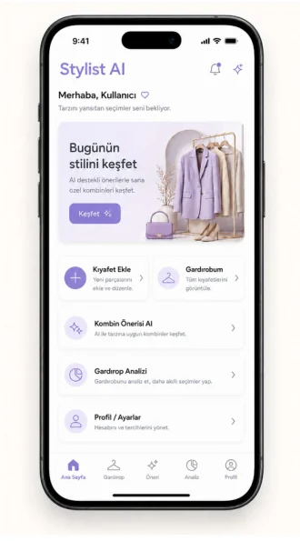
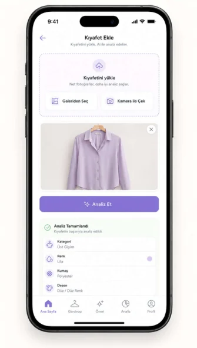

Problem
Günlük kombin oluşturmak zaman alıyor; kullanıcılar gardıroplarındaki parçaların potansiyelini göremiyor ve benzer ürünleri tekrar satın alabiliyor.
Stylist AI, mevcut kıyafetleri analiz ederek bağlama uygun ve açıklanabilir kombin önerileri sunar.

Stylist AI, kullanıcıların sahip oldukları parçaları daha verimli kullanmasına yardım eden bütünleşik bir karar destek sistemi olarak tasarlandı.
Günlük kombin oluşturmak zaman alıyor; kullanıcılar gardıroplarındaki parçaların potansiyelini göremiyor ve benzer ürünleri tekrar satın alabiliyor.
Kıyafet görsellerini otomatik analiz eden, dijital gardırop oluşturan ve hava durumu, etkinlik, stil ile geri bildirimi birlikte değerlendiren kişiselleştirilmiş öneri sistemi.
JPG, JPEG veya PNG görselini ekle; sistem dosyayı doğrulasın.
Kategori, baskın renk, görsel özellik ve embedding bilgileri çıkarılsın.
Hava durumu, mevsim, etkinlik türü ve stil tercihleri değerlendirilsin.
Birden fazla öneri, uyum skoru ve anlaşılır gerekçelerle sunulsun.
Yüklenen kıyafetin kategori, renk ve görsel özellik bilgileri kullanıcıya anlaşılır biçimde gösterilir.

Kıyafet tespiti, kategori sınıflandırması, baskın renk ve görsel embedding çıkarımı.
Kıyafetleri görüntüleme, filtreleme, düzenleme, silme ve kullanım geçmişini izleme.
Hava durumu, mevsim, etkinlik türü, renk, stil ve kullanıcı tercihlerinin birlikte değerlendirilmesi.
Her önerinin neden sunulduğunu gerçek karar bileşenlerine dayalı olarak açıklama.
Önerileri beğenme, reddetme veya kaydetme; kişiselleştirmeyi doğrudan tercihlerle geliştirme.
Az kullanılan kıyafetleri, eksik kategorileri ve kullanım dağılımını görünür kılma.
Android istemci; REST tabanlı çekirdek backend, ayrılabilir yapay zekâ yürütme alt sistemi ve kalıcı veri katmanıyla birlikte çalışır. Modüler monolit yaklaşımı uygulanır.
Raporlarda tanımlanan teknik ve kullanıcı odaklı hedefler.
Her rapor PDF ve DOCX biçiminde doğrudan indirilebilir.
Problem, motivasyon, çözüm yaklaşımı, kapsam, plan ve beklenen çıktılar.
Kapsam, kısıtlar, etik sorumluluklar ve sistem gereksinimleri.
Gereksinimler, senaryolar, use case, sınıf modeli, dinamik modeller ve UI taslakları.
Kullanılan standartlar, proje kısıtları ve beklenen etkiler.
Mimari stil, dağıtım, veri yönetimi, güvenlik ve alt sistem tasarımı.
Takımın şu anda herhangi bir danışmanı bulunmamaktadır. Olduğu takdirde ileride güncellenecektir.
Takım e-posta adresi yayın öncesinde eklenecek. Raporlar şimdiden indirilebilir durumdadır.